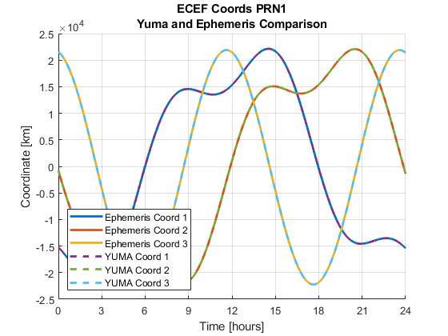
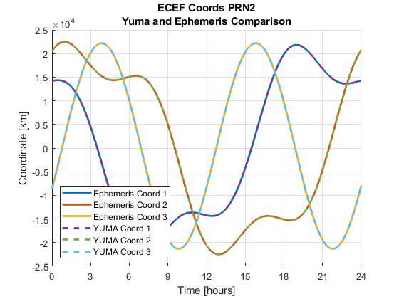
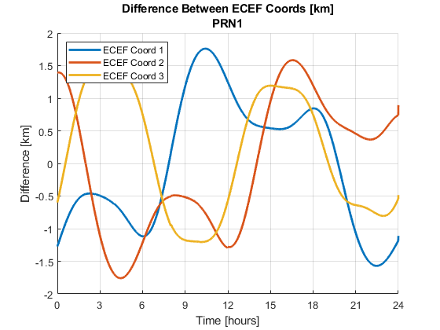
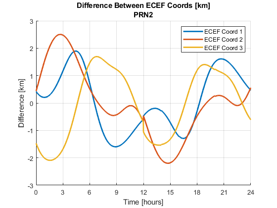
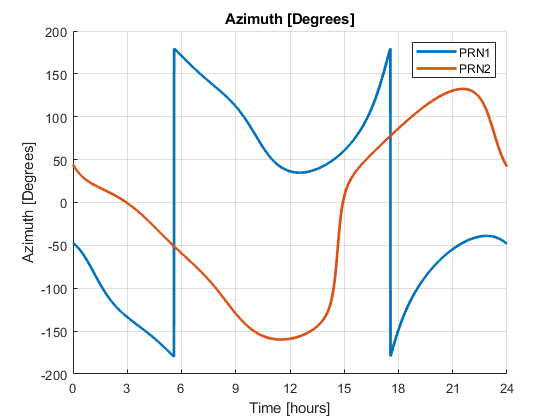
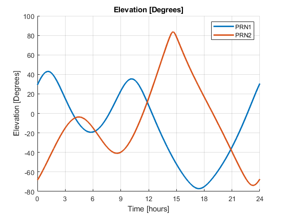
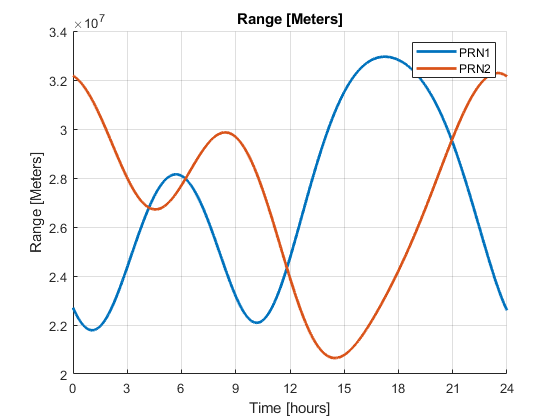

Contents
- HW4
- Define necessary variables
- 1) Determine the name of the full broadcast ephemeris file (Rinex V2) for September 1, 2020.
- 2) Use the function read_clean_GPSbroadcast.m (or a similar function you find elsewhere or write
- 3) Write a function broadcast_eph2pos to compute the position of a GPS satellite based on the ephemeris data, for
- 4) Choose one or two satellites (PRN’s) to study in detail. Using the broadcast2pos function (or similar code
- 5) Using the compute_azelrange function you wrote in HW3, find the range, azimuth, and elevation from
- 6) Now recompute the range accounting for the signal travel time and coordinate frame rotation as described in the
- 7. Download the NIST rinex observation file for September 1, 2020. Use the function read_rinex_obs8 or
- Plot C1 and P2 for PRN1
- Grab C1 and P2 for PRN1 and Plot
- 8) Describe the visibility results for the three locations.
- Functions
HW4
clc;clear;close all; % Date = October 5, 2020
Define necessary variables
c = 2.99792458e8; % GPS acceptd speed of light, m/s
1) Determine the name of the full broadcast ephemeris file (Rinex V2) for September 1, 2020.
fname = "brdc2450.20n";
fname = "nist2450.20n"; %Either the broadcast data from NIST or brdc work.
2) Use the function read_clean_GPSbroadcast.m (or a similar function you find elsewhere or write
yourself) to load the ephemeris data into a numerical array.
seconds_in_day = 60*60*24;
tow = seconds_in_day * 2; % Because we are on Tuesday
[gps_ephem,ionoparams] = read_clean_GPSbroadcast(fname,true);
3) Write a function broadcast_eph2pos to compute the position of a GPS satellite based on the ephemeris data, for
a specified set of times.
t = [0:1:24*60*2]*30+172800; %Time of week in seconds with 30 sec spacing % t = [0:1:24*60]*60+172800; %Time of week in seconds with 30 sec spacing WN = 2121*ones(size(t)); % WN = 73*ones(size(t)); T_in = [WN;t].'; %[nx2] gpsposcheck = zeros(32,3); PRN = gps_ephem(:,1); % Grab all the prn values from the ephemeris file num_sat = length(PRN); % Obtain the number of satellites we're interested in % Grab the position of all of the satellites in the ephemeris file for kk = 1:num_sat % Use our broadcast_eph2pos file to grab the position of the satellite [health,pos] = broadcast_eph2pos(gps_ephem,T_in,PRN(kk)); POS_ecef(:,:,kk) = pos/1000; %n x 3 x num_sat % This is to compare to the gpspos text file! if kk <= 30 gpsposcheck(kk,:) = POS_ecef(1,:,kk); end end
4) Choose one or two satellites (PRN’s) to study in detail. Using the broadcast2pos function (or similar code
you wrote yourself) from HW3, plot the ECEF coordinates computed based on the almanac for these satellites at an interval of 30 seconds over the entire day. On the x-axis show the time in hours of the day (0-24 hours). On the same graph, plot the ECEF coordinates computed using your new broadcast_eph2pos function for the same times. Compare and discuss the results, using a plot of the differences between them, if that is helpful.
prn_sat1 = 1; % I picked PRNs 1 and 2 prn_sat2 = 2; % First we filter out the PRNs we want from our ephemeris data ephem_PRN1 = find(PRN==prn_sat1); ephem_PRN2 = find(PRN==prn_sat2); ephem_PRN1_pos = POS_ecef(:,:,ephem_PRN1); % Now we can plot the ephemeris positions for satellites with PRN1 ephem_PRN2_pos = POS_ecef(:,:,ephem_PRN2); % Now we can plot the ephemeris positions for satellites with PRN2 % Now we grab the positions using YUMA file [alm,alm_cellarray] = read_GPSyuma('Data/YUMA245.alm',2); yuma_PRN = alm(:,1); yuma_num_sat = length(PRN); for kk = 1:num_sat [yuma_health,yuma_pos] = broadcast2pos(alm,T_in,PRN(kk)); yumaPOS_ecef(:,:,kk) = yuma_pos/1000; %n x 3 x num_sat end yuma_PRN1 = find(yuma_PRN==prn_sat1); yuma_PRN2 = find(yuma_PRN==prn_sat2); yuma_PRN1_pos = yumaPOS_ecef(:,:,yuma_PRN1); % Now we can plot the yuma positions for satellites with PRN1 yuma_PRN2_pos = yumaPOS_ecef(:,:,yuma_PRN2); % Now we can plot the yuma positions for satellites with PRN2 % Now we do our plots... let's just play with the first PRN1 position time = [0:1:24*60*2]*30/3600; %Time of week in seconds with 30 sec spacing time = time'; figure; hold on; grid on plot(time, squeeze(ephem_PRN1_pos(:,1,1)), 'LineWidth', 2) % Plot 1st ecef coord plot(time, squeeze(ephem_PRN1_pos(:,2,1)), 'LineWidth', 2) % Plot 2nd ecef coord plot(time, squeeze(ephem_PRN1_pos(:,3,1)), 'LineWidth', 2) % Plot 3rd ecef coord plot(time, yuma_PRN1_pos(:,1), 'Linestyle', '--', 'LineWidth', 2) % Plot 1st ecef coord plot(time, yuma_PRN1_pos(:,2), 'Linestyle', '--', 'LineWidth', 2) % Plot 2nd ecef coord plot(time, yuma_PRN1_pos(:,3), 'Linestyle', '--', 'LineWidth', 2) % Plot 3rd ecef coord xlim([time(1), time(end)]) xticks([0:3:24]) xlabel('Time [hours]') ylabel('Coordinate [km]') legend({'Ephemeris Coord 1', 'Ephemeris Coord 2', 'Ephemeris Coord 3', 'YUMA Coord 1', 'YUMA Coord 2', 'YUMA Coord 3'}, 'Location','southwest') title({['ECEF Coords PRN1'], ['Yuma and Ephemeris Comparison']}) figure; hold on; grid on plot(time, squeeze(ephem_PRN2_pos(:,1,1)), 'LineWidth', 2) % Plot 1st ecef coord plot(time, squeeze(ephem_PRN2_pos(:,2,1)), 'LineWidth', 2) % Plot 2nd ecef coord plot(time, squeeze(ephem_PRN2_pos(:,3,1)), 'LineWidth', 2) % Plot 3rd ecef coord plot(time, yuma_PRN2_pos(:,1), 'Linestyle', '--', 'LineWidth', 2) % Plot 1st ecef coord plot(time, yuma_PRN2_pos(:,2), 'Linestyle', '--', 'LineWidth', 2) % Plot 2nd ecef coord plot(time, yuma_PRN2_pos(:,3), 'Linestyle', '--', 'LineWidth', 2) % Plot 3rd ecef coord xlim([time(1), time(end)]) xticks([0:3:24]) xlabel('Time [hours]') ylabel('Coordinate [km]') legend({'Ephemeris Coord 1', 'Ephemeris Coord 2', 'Ephemeris Coord 3', 'YUMA Coord 1', 'YUMA Coord 2', 'YUMA Coord 3'}, 'Location','southwest') title({['ECEF Coords PRN2'], ['Yuma and Ephemeris Comparison']}) % Now we do diff plots of PRN1 because that maeks more sense to me diff1 = reshape(ephem_PRN1_pos(:,1,:) - yuma_PRN1_pos(:,1), [length(t), length(ephem_PRN1)]); diff2 = reshape(ephem_PRN1_pos(:,2,:) - yuma_PRN1_pos(:,2), [length(t), length(ephem_PRN1)]); diff3 = reshape(ephem_PRN1_pos(:,3,:) - yuma_PRN1_pos(:,3), [length(t), length(ephem_PRN1)]); f=figure; hold on; grid on plot(time, diff1(:,1), 'LineWidth', 2) plot(time, diff2(:,1), 'LineWidth', 2) plot(time, diff3(:,1), 'LineWidth', 2) title({['Difference Between ECEF Coords [km]'],['PRN1']}) xlabel('Time [hours]') ylabel('Difference [km]') xlim([time(1), time(end)]) xticks([0:3:24]) xlabel('Time [hours]') ylabel('Difference [km]') legend({'ECEF Coord 1', 'ECEF Coord 2', 'ECEF Coord 3'},'Location','northwest') % Now we do diff plots of PRN2 diff1 = reshape(ephem_PRN2_pos(:,1,:) - yuma_PRN2_pos(:,1), [length(t), length(ephem_PRN2)]); diff2 = reshape(ephem_PRN2_pos(:,2,:) - yuma_PRN2_pos(:,2), [length(t), length(ephem_PRN2)]); diff3 = reshape(ephem_PRN2_pos(:,3,:) - yuma_PRN2_pos(:,3), [length(t), length(ephem_PRN2)]); f=figure; hold on; grid on plot(time, diff1(:,1), 'LineWidth', 2) plot(time, diff2(:,1), 'LineWidth', 2) plot(time, diff3(:,1), 'LineWidth', 2) title({['Difference Between ECEF Coords [km]'],['PRN2']}) xlim([time(1), time(end)]) xticks([0:3:24]) xlabel('Time [hours]') ylabel('Difference [km]') legend({'ECEF Coord 1', 'ECEF Coord 2', 'ECEF Coord 3'},'Location','northeast')   
5) Using the compute_azelrange function you wrote in HW3, find the range, azimuth, and elevation from
your satellite(s) to the NIST IGS Site for the entire day. Use the GPS positions you calculated using your new function based on the ephemeris, not the almanac. Plot each of these versus time in hours of the day.
NIST_ecef = [-1288398 -4721697 4078625]; %ECEF coordinates in meters x y z nistECEF = [NIST_ecef]; num_NIST_ecef = size(nistECEF,1); %number of NIST_ecef locations num_time = size(t,2); for kk = 1:2 [health,pos] = broadcast_eph2pos(gps_ephem,T_in,kk); for tt = 1:num_time [azt(tt,kk,1),elt(tt,kk,1),ranget(tt,kk,1)] = compute_azelrange(NIST_ecef,pos(tt,:)); end if kk == 1 satPos1 = pos; else satPos2 = pos; end end % Plot Azimuth for Problem 5 f=figure; hold on; grid on plot(time, azt(:,ephem_PRN1(1)), 'LineWidth', 2) plot(time, azt(:,ephem_PRN2(1)), 'LineWidth', 2) title({['Azimuth [Degrees]']}) xlim([time(1), time(end)]) xticks([0:3:24]) xlabel('Time [hours]') ylabel('Azimuth [Degrees]') legend({'PRN1', 'PRN2'}) % Plot Elevation for Problem 5 f=figure; hold on; grid on plot(time, elt(:,1), 'LineWidth', 2) plot(time, elt(:,2), 'LineWidth', 2) title({['Elevation [Degrees]']}) xlim([time(1), time(end)]) xticks([0:3:24]) xlabel('Time [hours]') ylabel('Elevation [Degrees]') legend({'PRN1', 'PRN2'}) % Plot Range for Problem 5 f=figure; hold on; grid on plot(time, ranget(:,1), 'LineWidth', 2) plot(time, ranget(:,2), 'LineWidth', 2) title({['Range [Meters]']}) xlim([time(1), time(end)]) xticks([0:3:24]) xlabel('Time [hours]') ylabel('Range [Meters]') legend({'PRN1', 'PRN2'})  
6) Now recompute the range accounting for the signal travel time and coordinate frame rotation as described in the
attachment. Add this updated range to the previous range plot and compare the results. What is the largest difference you found?
% COMPUTING THE EXPECTED RANGE: % The expected range of interest is the distance between the position of the GPS satellite at the time of transmission % (Tt) and the GPS receiving antenna at the time of reception (Tr). To compute this distance, both positions must be % represented in the same coordinate frame - we use the ECEF coordinate frame at the time of reception (Tr). satECEF = satPos1; % We'll do this for just one sattelite TOL = 1e-8; not_converged = true; satECEF = satPos1; % Choose one satellite while not_converged % 1) Compute the GPS satellite poisition in ECEF at Tr based on the % broadcast ephemeris % Compute GPS satellite position at recieved time for rough idea of range % to satellite using an assumed location of reciever Tr = ranget(:,1) / c; % Calc for first satellite % 2) Use an a priori value for the receiver coordinates (RX) to find geometric range R = |rGPS – rRX| for tt = 1:num_time [~, ~, rGPS] = ECEF2llh(satECEF(tt,:)); [~, ~, rRx] = ECEF2llh(nistECEF); % assumed location of reciever is location for NIST R(tt) = abs(rGPS - rRx); end % 3) Compute the time of transmission: Tt = Tr – R/c (use the real speed of % light, NOT 3e8), it's usually 70-100 milliseconds Tt = Tr - R'/c; % 4) Compute the satellite position at Tt in ECEF at Tt based on the broadcast ephemeris. newt = Tt*30+172800; %Time of week in seconds with 30 sec spacing newT_in = [WN;newt'].'; [health, new_pos] = broadcast_eph2pos(gps_ephem, newT_in, PRN); % 5) Rotate the satellite position to ECEF at Tr. (wE is the rotation rate of the Earth) w_e = 7.2921151467e-5; % earth rotation rate [rad / sec] for kk = 1 for tt = 1:num_time phi = w_e * (Tr(tt, kk)-Tt(tt, kk)); % amount of rotation the earth moved during time of transmission cosPhi = cos(phi); sinPhi = sin(phi); rotation_matrix = [cosPhi, sinPhi, 0; -sinPhi, cosPhi, 0; 0, 0, 1]; rot_pos(tt ,: , kk) = (rotation_matrix * new_pos(tt,:).')'; end end % 6) Compute a new geometric range using this position for rGPS, R = |rGPS – rRX| for jj = 1:num_NIST_ecef NIST_ecef = nistECEF(jj,:); %grab the appropriate NIST_ecef location num_time = size(t,2); for kk = 1 for tt = 1:num_time satECEF = rot_pos(tt,:,kk); [~,~,new_ranget(tt,kk,jj)] = compute_azelrange(NIST_ecef,satECEF); end end end % 7) Repeat steps 3-6 until convergence. (If it takes more than two iterations, something is wrong). sprintf('Tolerance: %0.5g',abs(new_ranget(1,1) - ranget(1,1))) if abs(ranget(1,1) - new_ranget(1,1)) < TOL not_converged = false; % Go back to beginning :) end ranget = new_ranget; end % Plot Range figure hold on; grid on; plot(time, ranget) title({['Problem 6 Range [Meters]']}) xlim([time(1), time(end)]) xticks([0:3:24]) xlabel('Time [hours]') ylabel('Range [Meters]') legend({'PRN1', 'PRN2'})
ans =
'Tolerance: 2.2153e+06'
Index in position 1 exceeds array bounds (must not exceed 1).
Error in HW4_script (line 221)
[~, ~, rGPS] = ECEF2llh(satECEF(tt,:));
7. Download the NIST rinex observation file for September 1, 2020. Use the function read_rinex_obs8 or
another version that you find or write yourself to read the RINEX file and extract all of the measured C1 and P2 pseudoranges for the satellite you chose. Plot these pseudoranges versus time in hours of the day.
fname = "DATA\nist2450.20o"; prn1_rdata = read_rinex_obs8(fname, [1]); % Grab PRN1 data prn2_rdata = read_rinex_obs8(fname, [2]); % Grab PRN2 data % Grab C1 and P2 for PRN1 and Plot prn1_C1 = prn1_rdata.data(:,4); prn1_P2 = prn1_rdata.data(:,8);
Plot C1 and P2 for PRN1
figure; hold on; grid on % Create figure plot(1:1:length(prn1_C1), prn1_C1, 'LineWidth', 2) plot(1:1:length(prn1_P2), prn1_P2, '--', 'LineWidth', 2) % Make plot pretty xlim([time(1), time(end)]) xticks([0:3:24]) xlabel('Time [hours]') ylabel('Pseudoranges [km]') legend({'C1', 'P2'}) title({['Pseudoranges C1 and P2'], ['PRN1']})
Grab C1 and P2 for PRN1 and Plot
prn2_C1 = prn2_rdata.data(:,4); prn2_P2 = prn1_rdata.data(:,8); % Plot C1 and P2 for PRN2 figure; hold on; grid on plot(1:1:length(prn2_C1), prn2_C1, 'LineWidth', 2) plot(1:1:length(prn2_P2), prn2_P2, '--', 'LineWidth', 2) xlim([time(1), time(end)]) xticks([0:3:24]) xlabel('Time [hours]') ylabel('Pseudoranges [m]') legend({'C1', 'P2'}) title({['Pseudoranges C1 and P2'], ['PRN2']})
8) Describe the visibility results for the three locations.
Compare the measured pseudoranges to your predicted range. Briefly explain what might be the source of any differences between them. (To do this part, create a time vector from the observations and compute the predicted range for those times.) The range calculated in problem 6 has the same order of magnitude as the pseudoranges. This could be becausse sp3 files are re-calculated every epoch and it takes a much longer time to calculate these but they are more accurate.
Functions
Problem 1 function
function [lat,lon,h] = ECEF2llh(xyz) R = 6378.137e3; %SemiMajor axis of ellipsoid (meters) f = 1/298.257223563;% flattening parameter of ellipsoid e2 = 2*f-f^2; %square of eccentricity of ellipsoid. lambda = atan2d(xyz(2),xyz(1)); %Longitude (deg) p = sqrt(xyz(1)^2+xyz(2)^2); r =sqrt(sum(xyz.^2)); phi_gd = asind(xyz(3)/r); %initial guess for geodetic latitude (deg) tolerance = 1e-8; dif = 1; while dif > tolerance %iterate until delta is small C = R/sqrt(1-e2*sind(phi_gd)^2); %Radius of curvature in the meridian tan_phi_gd = (xyz(3)+C*e2*sind(phi_gd))/p; phi_gd_new = atand(tan_phi_gd); %Geodetic latitude (deg) dif = abs(phi_gd_new - phi_gd); %difference between guess and new phi_gd = phi_gd_new; %set old to new end h = p/cosd(phi_gd)-C; %ellipsoidal height (meters) above surface lat = phi_gd; %latitude (deg) lon = lambda; %longitude (deg) end % Problem 2 function function A = ECEF2ENU(lat,lon) lam = lon; phi = lat; a1 = [1,0,0;... 0,sind(phi),cosd(phi);... 0,-cosd(phi),sind(phi)]; a2 = [-sind(lam),cosd(lam),0;-cosd(lam),-sind(lam),0;0,0,1]; A = a1*a2; end %Problem 3 function function LOS_ENU = compute_LOS_ENU(nistECEF,satECEF) %a) compute the vector pointing from NIST_ecef location to satellite elos_ECEF = satECEF - nistECEF; %line of site vector from NIST_ecef to satellite %b) normalize it to a unit vector elos_norm = elos_ECEF/sqrt(sum(elos_ECEF.^2)); %c) transform the unit vector from ECEF to ENU [lat,lon,h] = ECEF2llh(nistECEF); %get latitude and longitude of NIST_ecef ENU_matrix = ECEF2ENU(lat,lon); LOS_ENU = ENU_matrix*elos_norm.'; end %Problem 4 function function [az,el,range] = compute_azelrange(nistECEF,satECEF) los_enu = compute_LOS_ENU(nistECEF,satECEF); range = sqrt(sum((nistECEF-satECEF).^2)); %distance btwn NIST_ecef and sat r = sqrt(sum(los_enu.^2)); %always 1? weird az = atan2d(round(los_enu(1),5),round(los_enu(2),5)); %azimuth (deg) el = asind(los_enu(3)/r); %elevation (deg) end